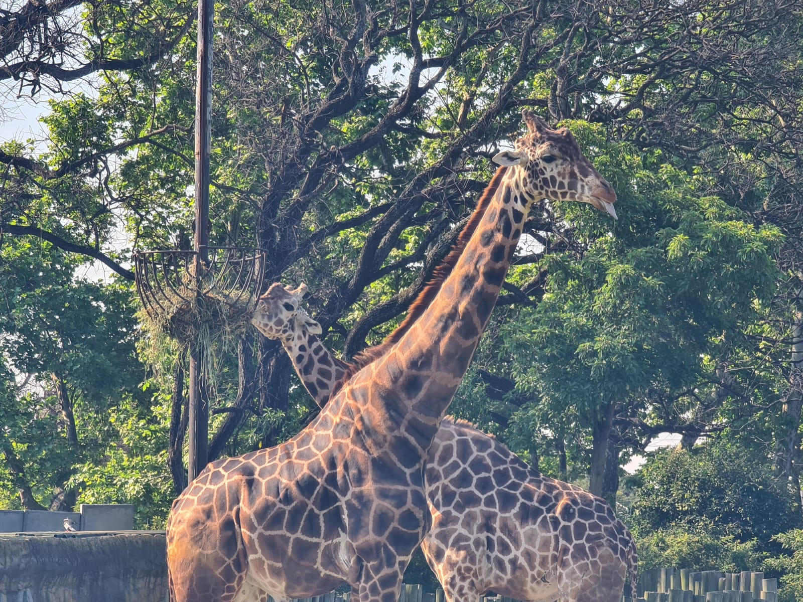
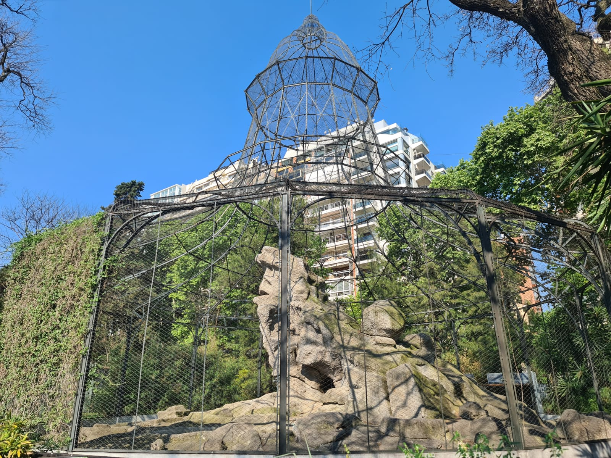
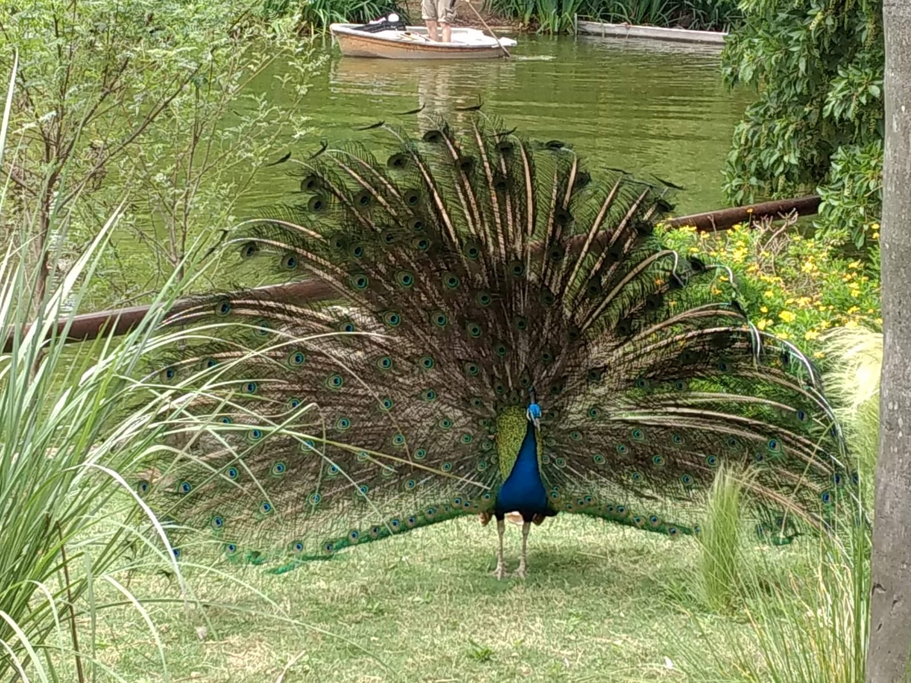
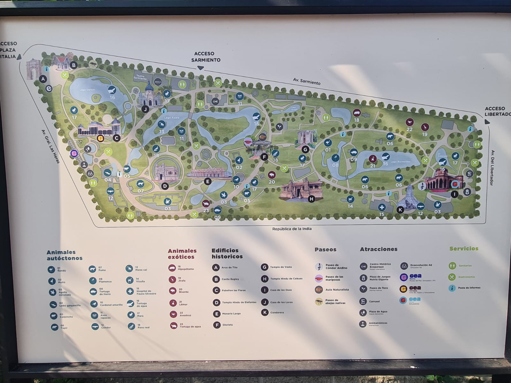
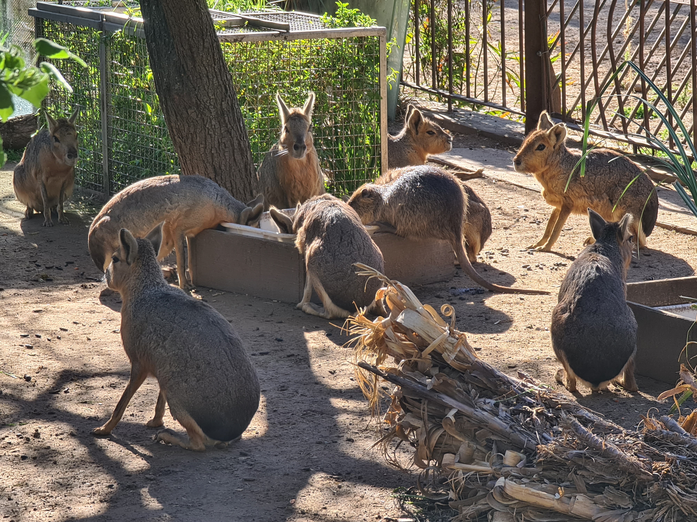
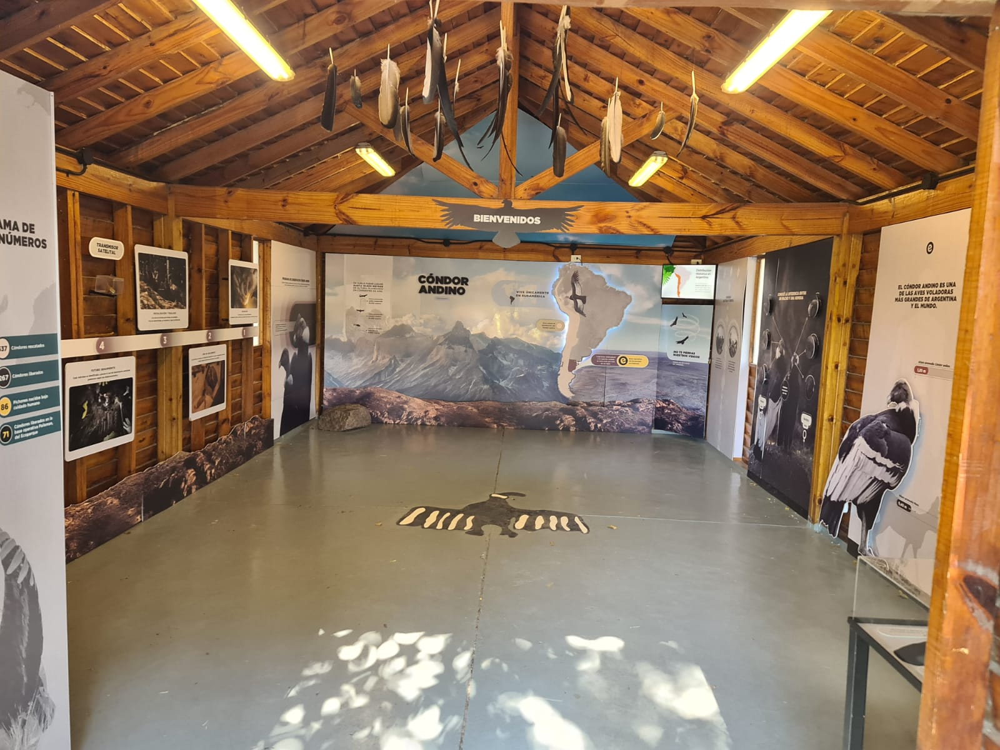
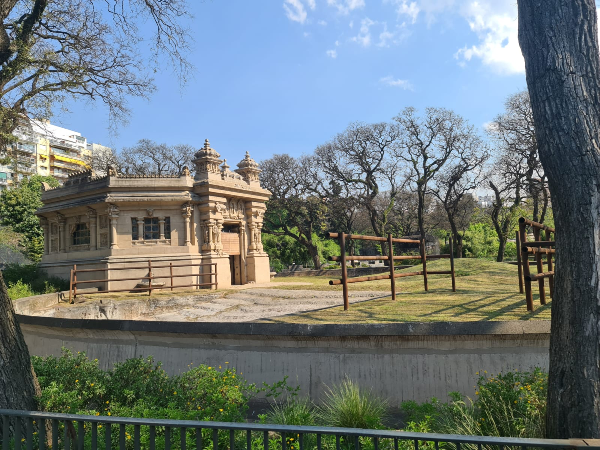
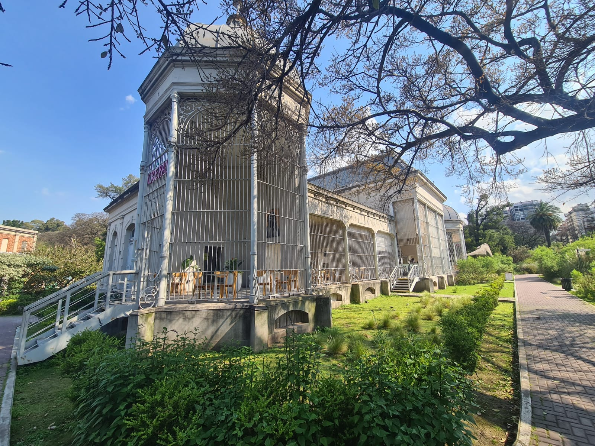

Ecoparque
Conectá con la naturaleza en el corazón de Palermo





Información general
- Ubicación: Av. General Las Heras 4267, Palermo, Ciudad de Buenos Aires.
- Horario general:martes a domingo, de 11:00 a 18:00, sujeto a cambios.
- Acceso: gratuito para residentes de CABA.
- Duración sugerida: 1,5 a 3 horas, según las actividades elegidas.
- Cómo llegar: subte línea D, estación Plaza Italia, o colectivos por Av. Santa Fe, Av. Sarmiento y Av. Las Heras.
El Ecoparque de Buenos Aires es un espacio de naturaleza, conservación y educación ambiental ubicado en Palermo. El recorrido propone descubrir la biodiversidad, conocer el trabajo de conservación de fauna y reconocer la historia del predio, que funcionó como Zoológico de Buenos Aires hasta 2016.
La experiencia busca transmitir la importancia de proteger especies y también sus ambientes. El visitante conocerá los programas de rescate, rehabilitación y conservación de fauna, y comprenderá la transformación del antiguo zoológico en un espacio con nuevos objetivos ambientales y educativos. También podrá descubrir el patrimonio histórico y arquitectónico que permanece en el predio.
Recomendamos Usar calzado cómodo y llevar agua y protección solar. Consultar previamente la programación y las condiciones de apertura, especialmente ante mal tiempo. Respetar las indicaciones del personal, no alimentar ni tocar a los animales y mantener una distancia adecuada.
Actividades
Pasear por el parque
Recorrer los senderos y espacios verdes del Ecoparque.

Observar animales
Conocer especies autóctonas y aprender sobre su conservación.

Actividades educativas
Conocer los programas de rescate, rehabilitación y conservación de fauna.

Conocer la historia
Recorrer los edificios y monumentos históricos del antiguo Zoológico de Buenos Aires.

Espacios patrimoniales
Conocer espacioss como el Templo de Vesta, la Glorieta y el Pabellón de las Fieras.